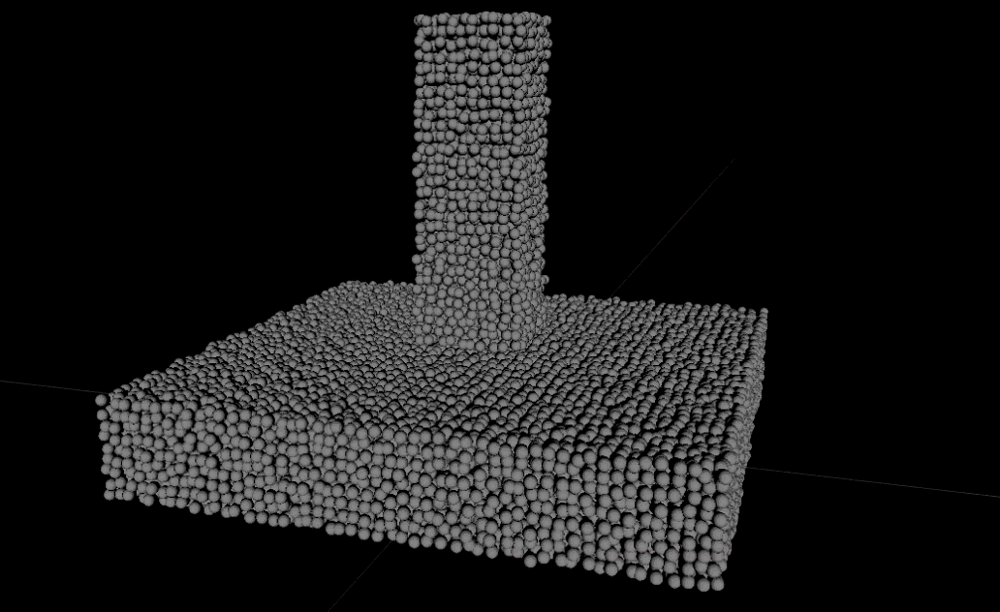
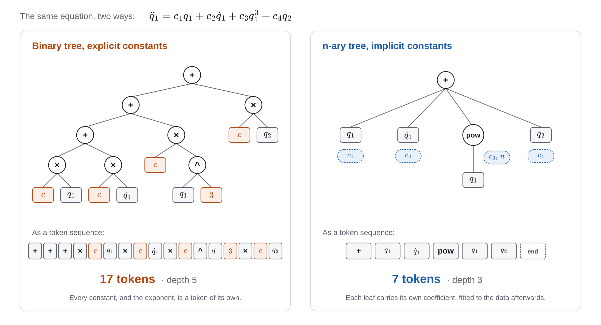
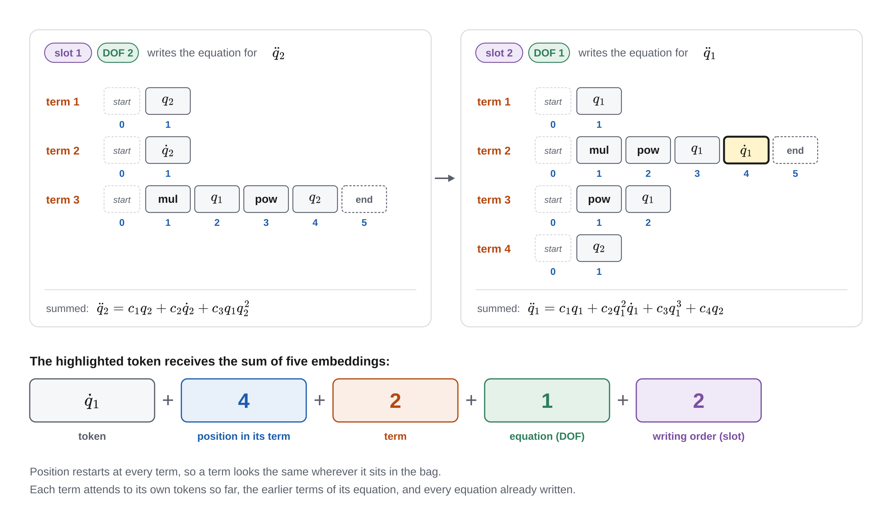

I am an undergraduate in aerospace engineering at Georgia Tech. I work on autonomy for
machines that have to touch the world — robots that dig, land, and grasp, where the
physics is messy and the model is never quite right.
That has pulled me across four labs: GPU simulation of deformable terrain, interpretability
of vision–language–action policies, symbolic recovery of structural dynamics, and
multi-agent task allocation. I also build the landing control stack for Georgia Tech
Propulsive Landers. I am applying to PhD programs in robotics and autonomy.
Deformable Terrain Simulation for Rover Excavation
Aerospace Systems Design Laboratory · Advisor: J. McNabb · May 2026 – present
Motivation: Lunar rovers trained to excavate regolith need to interact realistically with the soil.
The policies trained for lunar excavation must know how soil yields, pilesup, or flows. This is because lunar
missions are critical and cannot afford failures due to unrealistic soil modeling.
A material point method solver, written from scratch
I wrote an MPM solver on the NVIDIA Warp API, which compiles Python kernels down to
CUDA. Soil is carried by particles and scattered onto a computational grid each step. The grid is then updated
and the particles are updated based on the grid's state. The grid is then reset for the next step and the process continues.
Before training excavation policies I needed to ensure that the simulator accurately captured realistic soil behavior
under gravitational forces, and applied forces. Below is an example of the simulator in action with just gravity acting on the soil.
There is a looser, less cohesive soil on top of a more dense and compact soil block.

Coupling deformable soil to articulated robots
However, a soil solver alone cannot simulate a rover. I built a Python interface joining the
Warp solver to NVIDIA PhysX so contact forces could propagate in both directions (Newton's Third Law).
In other words, when a body acts on the soil, the body should experience an equal and opposite reaction.
Below are example of the coupled simulator in action, showing how the soil pile reacts to a rolling and a dropped sphere.
The sphere deforms the soil pile, and gets lifted as a result of the soil's reaction forces.
Coupled simulator showing soil reaction to a rolling and a dropped sphere. Validating Newton's Third Law in the simulation.
I then tested more complex interactions that served as a primitive proxy for excavation tasks. This includes
a scoop interacting with the soil, and a rotating excavation wheel engaging with the soil.
Proxies for primitive excavation tasks, a scoop and a rotating excavation wheel interacting with the soil. Also validates soil behaving as a viscous fluid by being constrained to a box.
Training excavation policies in the loop
On top of the coupled simulator I built a reinforcement learning pipeline that trains
rovers on excavation tasks. However, NVIDIA released its stable Newton engine capable of native GPU-accelerated physics simulations
with its own ImplicitMPM solver. I ended up refactoring the codebase and switched to Newton.
The first test was a basic validation that our pipeline could train a policy. I used a basic vehicle model which was rewarded for
the amount of y distance that it traveled whilst being penalized for lateral movement. It would have to drive over
soil that was simulated with Newton's ImplicitMPM solver.
Basic validation of the reinforcement learning pipeline with a simple vehicle model driving over soil simulated by Newton's ImplicitMPM solver. Trained for 100 epochs with only 4 parallel environments on my laptop.
Driving to the dig site
The rover is a two-drum regolith excavator, modelled in MuJoCo/Newton and driven over
terrain in Isaac Lab. The excavator is inspired by the NASA RASSOR excavator design.
Navigation is split in two parts. A cost-map planner computes a
cost-to-goal field over the terrain heights at the start of each episode, and a
reinforcement learning policy, trained with PPO, follows the path traced from that field
by commanding wheel speed and steering.
This policy was first tested on six hand-built courses, each built around one kind of obstacle.
The navigation policy on the six evaluation courses. Left to right, top to bottom: boulder, chicane, crater, field, gate, and wall.
The same policy on randomly generated terrain, with a new start and goal in each episode. The green markers
are only visual markers and cannot physically interact with the rover. The terrain is not flat, as it has some small
undulations, and obstacles like craters and boulders.
Six navigation episodes on randomly generated terrain.
A scripted dig pass in two-way coupled soil
At the work site, we assume the navigation policy has placed the rover in line with where it is digging,
and at the position where it needs to start digging. This makes digging straightforward which is why we use a scripted
digging motion. The rover lowers its front drum to a set cut depth and drives a
straight pass while the drum spins. The rear drum stays raised. The soil is Newton's
implicit MPM, coupled both ways to the rover, so the drum and chassis feel the soil's
reaction while it cuts.
A learned policy is only really justified when soil properties vary substantially within the same site. It is also justified when
cohesion, density, and friction are not known before the drum touches the ground.
There is currently ongoing work on training a policy that is able to respond to drum fill fraction and
torque felt by the excavating drum.
A scripted dig pass with the front drum, simulated with Newton's implicit MPM soil two-way coupled to the rover.
Feature-Level Interpretability of a Vision–Language–Action Model
Trustworthy Robotics Lab · Advisor: G. Chou · May 2026 – present
Vision–language–action models will pick up a cup when you ask them to, and nobody
can say what inside them decided to close the gripper. I look for the internal features that
cause the action, and then check the claim by intervening on them.
Sparse features, verified by intervention
Using TopK sparse autoencoders, I pull interpretable features out of OpenVLA,
OpenVLA-OFT, MiniVLA, WorldVLA, and π0.5. Correlation is not enough, so each
candidate is tested in closed loop across the LIBERO suites: ablate it and the
behaviour should break, add it back and the behaviour should return.
Ranking features without a human in the loop
Rather than hand-labelling what each feature means, I rank them by measured causal
contribution to the emitted action. The ordering falls out of the model's own
behaviour, which is what makes the method scale past a handful of features.
Generalists, specialists, and a constant nobody asked for
Some features fire at grasp and at release across every task — the model has
learned a notion of contact. Others are specialists, tied to one phase of one
trajectory or one skill. I also found a near-constant baseline that contributes to the
commanded action independently of any interpretable feature, which sets a floor on how
much of the policy this method can currently explain.
Symbolic Discovery of Structural Dynamics Equations
Moore Dynamics and Analytics Laboratory · Advisor: K. Moore · Jan 2026 – present
Given only vibration response, the goal is to find the governing equations of motion
that describe them. I extended deep symbolic regression
to work for physical systems with multiple coupled degrees of freedom, and tested it on
simulated systems and on real experimental setups.
Shorter equations: n-ary trees with implicit constants
A transformer writes candidate equations token by token and is trained with
reinforcement learning to write ones that fit the data. In the original binary-tree
form, addition and multiplication take only two inputs and every constant is a token
of its own, so even a modest equation costs many tokens. I switched to n-ary trees,
where one addition or multiplication takes any number of terms, and let each token
carry its own coefficient, fitted to the data afterwards. The same equation takes far
fewer tokens, which puts more expressive equations within reach.

The same equation as a binary tree with explicit constants (17 tokens) and as an n-ary tree with implicit constants (7 tokens).
One transformer writes every equation, one term at a time
An equation of motion is a sum of forces, and a sum has no order. So the model writes
each degree of freedom's equation as a bag of short terms that are summed afterwards.
I designed a positional encoding that places every token by three coordinates: the
equation it belongs to, the term it sits in, and its position within that term. One
more embedding records where that equation falls in the writing order, which is
shuffled during training. Each term attends to the terms and equations already written,
so a coupling force found in one equation can be reused in another.

Two DOFs written in shuffled order. Each token's input is the sum of five embeddings: the token, its position in its term, the term, the equation (DOF) it belongs to, and that equation's place in the writing order (slot).
Scoring a candidate
Each candidate's constants are fitted by least squares against the work–energy
balance and the measured acceleration. The energy balance keeps small damping terms
visible: they are a few percent of the acceleration, but they dominate the energy lost
over a cycle. Candidates are rewarded either by that balance or by simulating them
forward from the measured initial state and comparing the response with the record.
For coupled systems the search can also be restricted to equations that obey Newton's
third law: a force between two masses is written once, and its equal and opposite
reaction is added to the other equation automatically.
Simulated single-DOF systems
[One or two sentences: which systems, and what was recovered.]
Left: [system 1]. Right: [system 2]. True response against the response of the discovered equation.
An experimental single-DOF system with a smooth nonlinearity
[One or two sentences: the rig, the nonlinearity, and what was recovered.]
Measured displacement against the discovered equation, simulated from the measured initial state. Discovered: [equation].
Simulated coupled systems: two and three DOFs
[One or two sentences: the systems and what was recovered.]
Two-DOF system: [system]. True against discovered response for both DOFs.Three-DOF system: [system]. True against discovered response for all three DOFs.
An experimental coupled rig: the LO–NO system
A linear oscillator (LO) with a nonlinear oscillator (NO) attached to it through a
nonlinear spring, excited by hammer hits on each mass in turn. With Newton's third law
built in, every force between the two masses is written once and mirrored onto the
other. [One sentence on the result, for example how it compares with the published
model.]
[The LO–NO rig.]Measured displacement against the discovered equations, simulated together from the measured initial state. Left: LO. Right: NO.
Multi-Agent Task Allocation for Lunar Surface Construction
Aerospace Systems Design Laboratory · Advisor: J. McNabb · Jan – May 2026
Building a lunar base means a fleet of rovers dividing up work with no dispatcher, where
some jobs simply cannot start before others finish. I adapted a decentralised auction
algorithm to handle that ordering without giving up its guarantees.
CBBA under precedence constraints
The consensus-based bundle algorithm lets agents bid tasks among themselves and
converge on an allocation. I adapted it to a discrete, agent-based simulation of base
construction — and kept its convergence guarantee under the added constraints by
enforcing diminishing marginal gain across each bundle and breaking ties
deterministically on agent ID.
Precedence as a tiered DAG
I encoded task ordering as a directed acyclic graph, partitioned into tiers, with CBBA
run to convergence inside each tier before moving to the next. This sidesteps the
time-window formulations usually used for precedence, which force you to guess
schedules up front.
Validation across fleet sizes
I validated successful assignment across 4–10 agents and 10–30 tasks,
checking that precedence held and that every task found an owner.